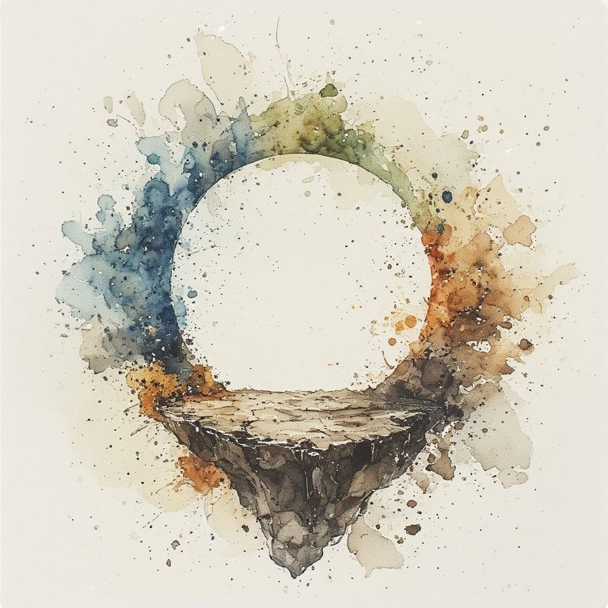
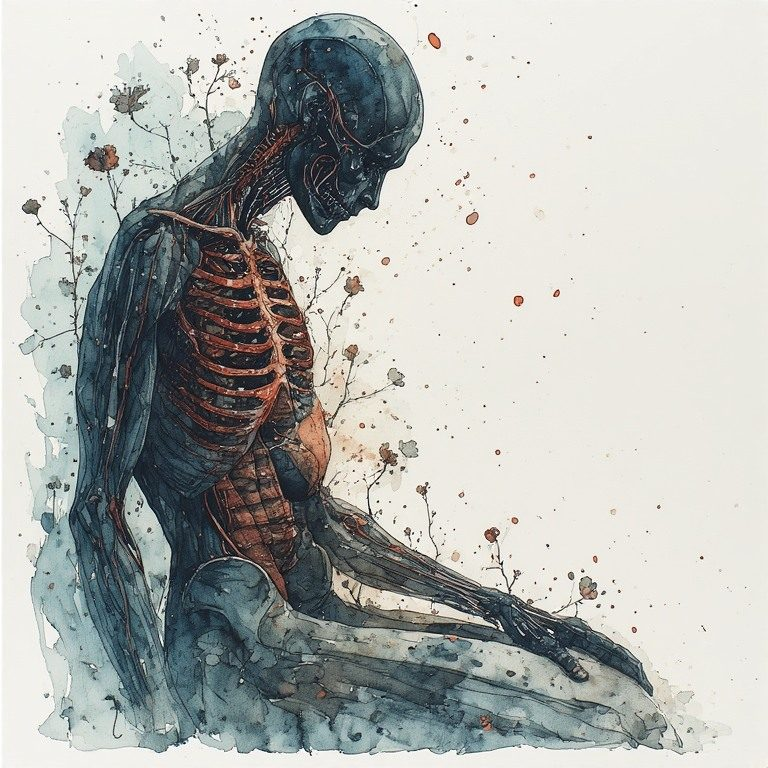
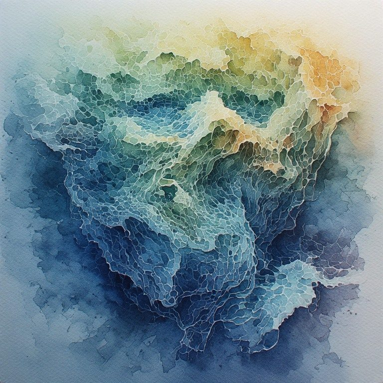
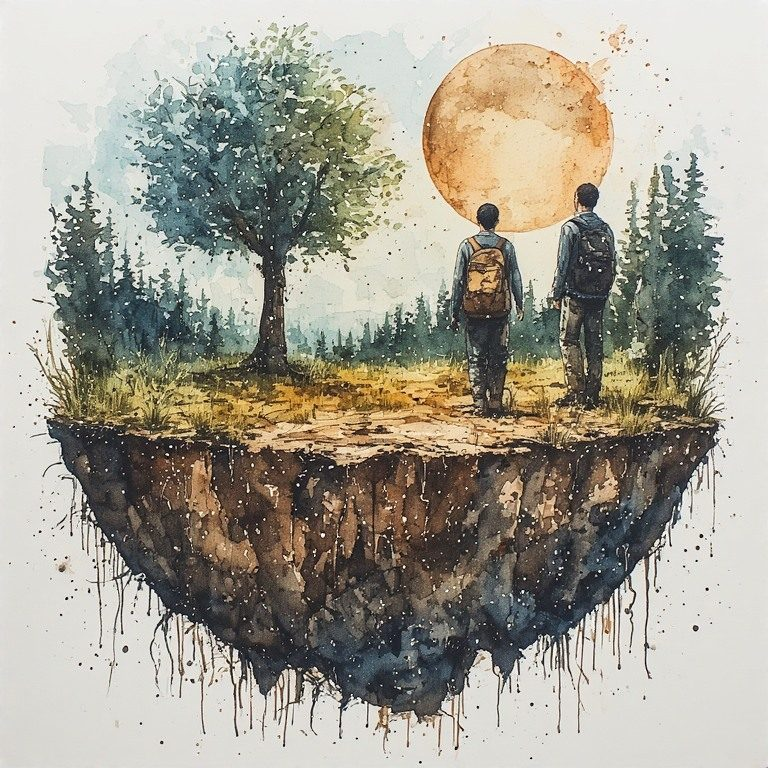
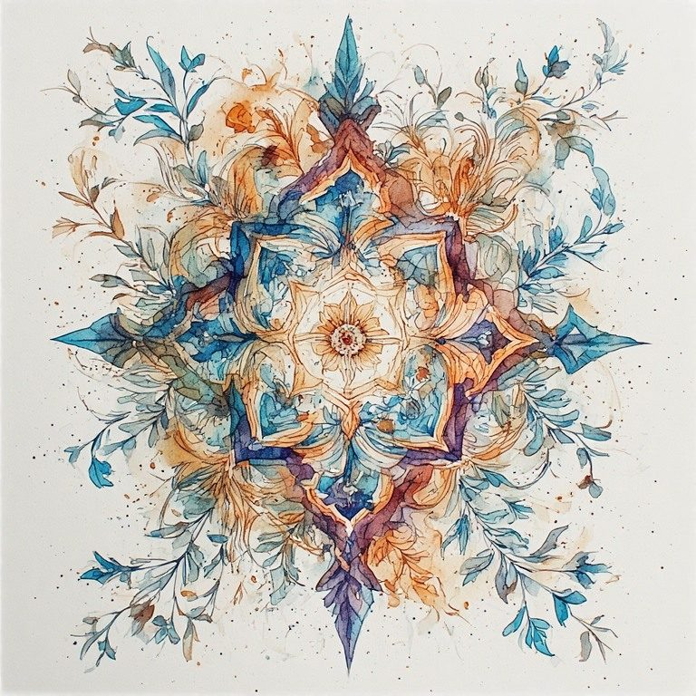

Part Eight: The Crossing Point, Seven Days
← Part Seven: Practices · Radical Immanence Collection · A Note at the End →
Pillar: Pillar 11 The Crossing Point · Across every book
This seven-day sequence works the vertical axis. Each day pairs a Here Is Enough practice with a Crossing Point extension. You can do them back to back or separately. The horizontal and vertical axes support each other. Being present on one deepens presence on the other.

DAY 1
You are standing on something
The ground beneath you is not empty. It has always been made of something.
TODAY'S PRACTICE
Begin with the Here Is Enough body practice: sit still for 90 seconds and feel the weight of your body pressing down. Then extend that attention further. Below the floor. Below the foundation. Into the ground. Feel, even briefly, that what you are pressing down into is not nothing. It is made of time.
| The present moment is not free-floating. It rests on everything that accumulated to produce it. You are not hovering above your life. You are in it, pressed down into it. And the ground itself has history. |
|---|
What does it feel like to extend your attention downward, past the floor, into the ground? What is there?
Here Is Enough.
DAY 2
What you received that you did not ask for
You are built from deposits you did not choose and could not refuse.
TODAY'S PRACTICE
Sit for a few minutes and name, without judgment, three things you received in your formation that you did not ask for. Not only wounds. Perhaps a particular quality of attention. A way of understanding time. A language. A grief. A gift. Let them be named without evaluation.
| You are alluvial. The soil you are made of came from upstream. That is not a problem. It is a description. Seeing clearly what you are made of is the beginning of carrying it honestly. |
|---|
What three things did you receive that you did not ask for? What do you notice when you name them without evaluating whether they were good or bad?
Here Is Enough.

DAY 3
The ancestor in your body
Someone who lived before you is present in the way you move through the world.
TODAY'S PRACTICE
Think of a person, biological ancestor or otherwise, who shaped you without your choosing. A grandparent, a teacher, a figure from the community or culture that formed you. Sit for a few minutes and ask: where are they in my body? In my habits of thought? In the way I respond to particular situations? Not as mysticism. As honest attention to what transmission actually looks like.
| The ancestors are not in a separate realm. They are in the patterns you enact, the language you reach for, the grief you carry, the shapes of love and wound you received. Acknowledging their presence is not reverence. It is accuracy. |
|---|
Where do you feel the presence of someone who formed you, in your body or your patterns? What are they deposited in?
Here Is Enough.

DAY 4
You are depositing something right now
Everything you are doing today is adding to the sediment.
TODAY'S PRACTICE
Think of someone in your life who is being formed in part by their proximity to you. A child, a partner, a student, a friend. Sit for a few minutes and ask, honestly, what am I depositing in them right now. Not what do I intend. What is actually in motion. What might they be receiving from me that I have not fully chosen to give.
| You cannot control what you deposit with precision. But you can be honest about what is in motion. And what is carried honestly passes forward differently than what is carried unnamed. |
|---|
What are you depositing in someone close to you right now that you have not yet named to yourself?
Here Is Enough.
DAY 5
The grief that is older than you
Some of what you carry was not originally yours.
TODAY'S PRACTICE
Sit for a few minutes with a grief or a fear or a pattern of response in yourself that feels older than your own life. You may not know its origin. That is fine. You do not have to trace it. Just let it be present and let yourself acknowledge: this may be older than me. This may have been carried a long way before it reached me.
| You do not have to resolve inherited grief. You just have to stop carrying it as if it were only yours, which adds a particular loneliness to an already heavy thing. Knowing something was deposited in you before you had a choice about it does not make it less yours to carry. It makes the carrying more honest. |
|---|
What are you carrying that may be older than you? What changes when you let that possibility be real?
Here Is Enough.

DAY 6
The seven generations question
You are forming ground that people you will never meet will stand on.
TODAY'S PRACTICE
Choose one ordinary thing you are doing today, not a grand decision, just something ordinary, and ask the seven generations question: what am I depositing. What layer am I adding to the sediment. Let the question sit without demanding an answer. The value is in the orientation shift.
| You do not have to be able to answer this question to benefit from asking it. The asking itself moves you from the horizontal axis, the present moment and its immediate consequences, to the vertical axis, where you are standing on a transmission line and forming ground for the not-yet-born. |
|---|
What ordinary thing are you doing today, and what might you be depositing through it?
Here Is Enough.

DAY 7
Here is enough. Here is also enormous.
You have spent a week on the vertical axis. Now return to the center.
TODAY'S PRACTICE
Sit still for 90 seconds. Feel the weight of your body. Extend your attention downward into the sediment. Extend it upward toward the not-yet-born. Then return to the horizontal axis: this moment, this body, this breath, the ordinary Wednesday of your actual life. Let both axes be felt at the same time, even briefly. You are at the crossing point.
| Here is enough. That has not changed. The present moment is still where your life is located. The ordinary Wednesday still counts. The cup of tea is still the whole thing. And here is also enormous. Made of everything that came before. Forming everything that comes after. Both things are true at once. That is the crossing point. |
|---|
What does it feel like to hold both at the same time: here is enough, and here is also enormous?
Here Is Enough.
Cite this page: Russell, Coral. “Part Eight: The Crossing Point, Seven Days.” The Marguerite Young Society, updated October 29, 2026. https://marguerite-young-society.coralrussellbooks.workers.dev/collection-04-09-part-eight-the-crossing-point-seven-days